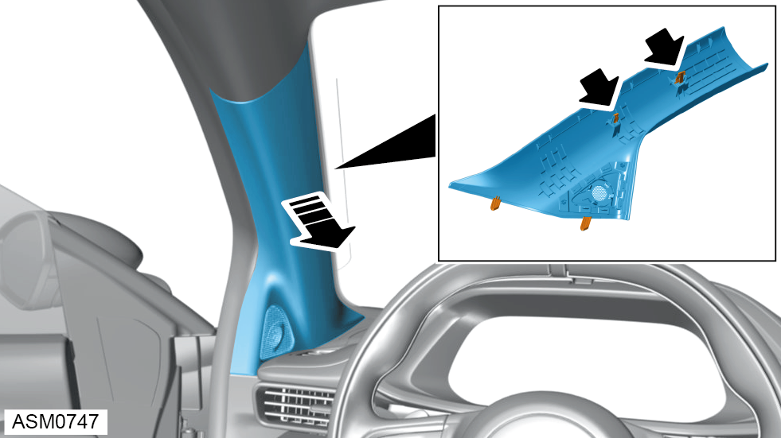
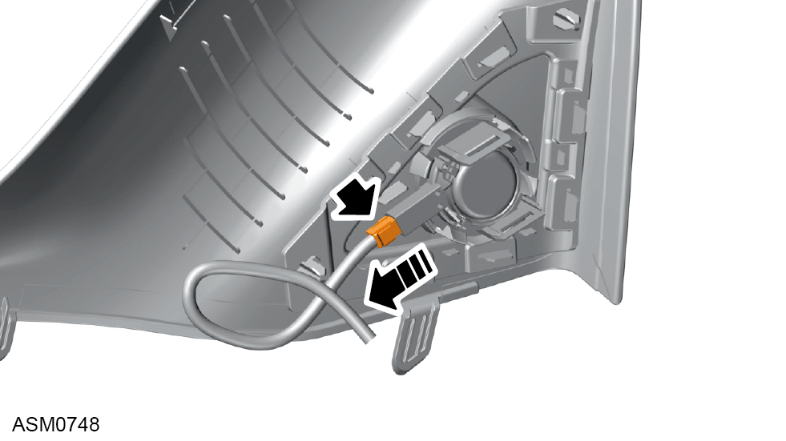
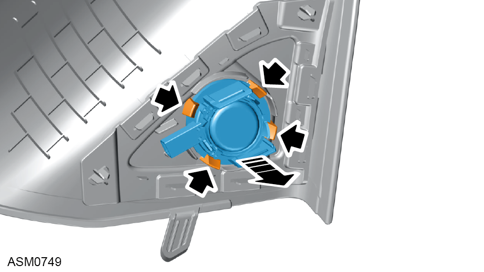

Tweeter Speaker - Left Side
Print
Operation Code: 17.27.29-02
Removal

- Carefully pull A pillar trim to disengage clips (x2) securing A pillar trim to vehicle.
NOTE: Windscreen glass removed for image clarity.
- Remove A pillar trim to access harness connector.

- Disconnect harness connector from tweeter speaker.

- Remove tweeter speaker from A pillar trim.
Installation
- Installation is the reverse of removal procedure.